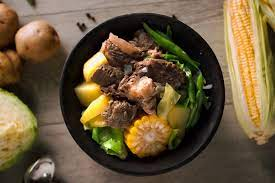

Beef Nilaga

Beef Nilaga Soup
Beef Nilaga is a relieving meal to have. Cooked for long periods of time until the flavors of the meat pours out to the soup and into your mouth hmmm the flavor you can feel it really
It is a wonderful delicacy in the philippines. Often cooked during the wet season, with it's warming taste and richness in flavor, it is good to share this meal with others.
- 1 kg --- Beef Short Ribs
- 6 cups --- Water
- 1 pc --- Onion
- 2 pcs --- Bay Leaf
- 1 tsp --- Black Peppercorn
- 1 pc --- Yellow Corn
- 1 pc --- Potato
- 1 head --- Cabbage
- 2 sprigs --- Spring Onion
- 2 sachets --- Magic Sarap
- Simmer beef in water until slightly tender. Skim off fat as needed.
- Add onion, bay leaves and peppercorn. Simmer until beef is very tender.
- Add corn and simmer for 10 minutes. Add potato, cabbage and spring onion.Season with magic sarap. Transfer into a serving bowl and serve.